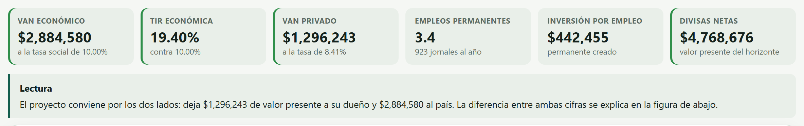
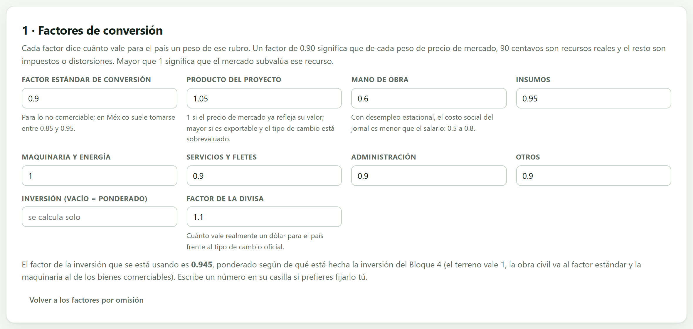
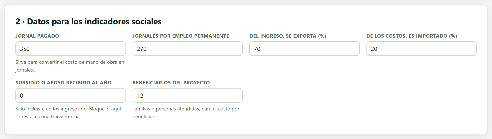
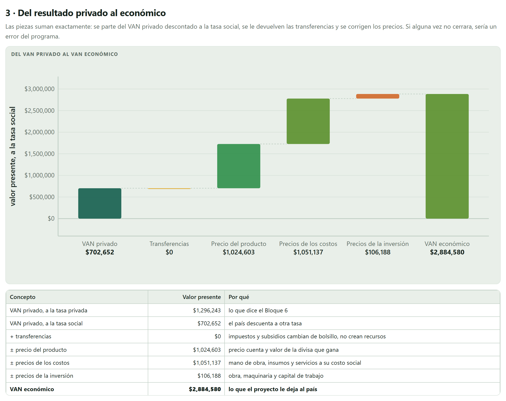
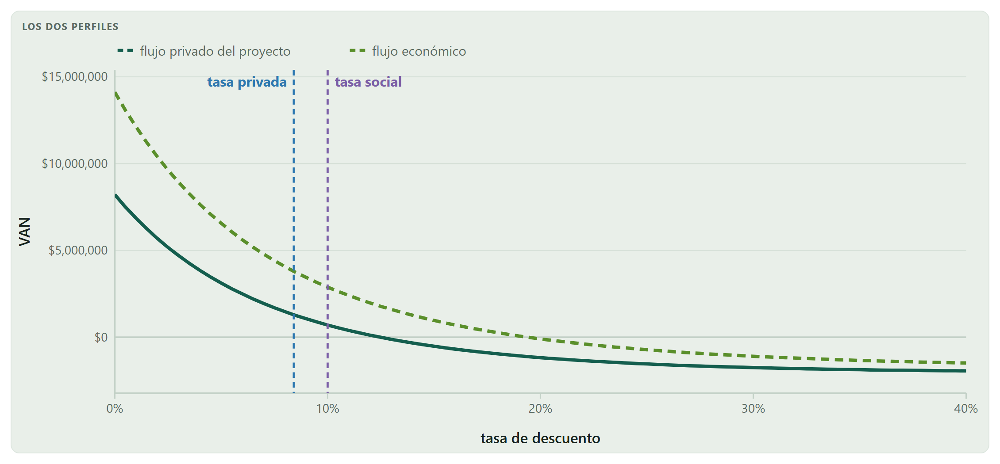
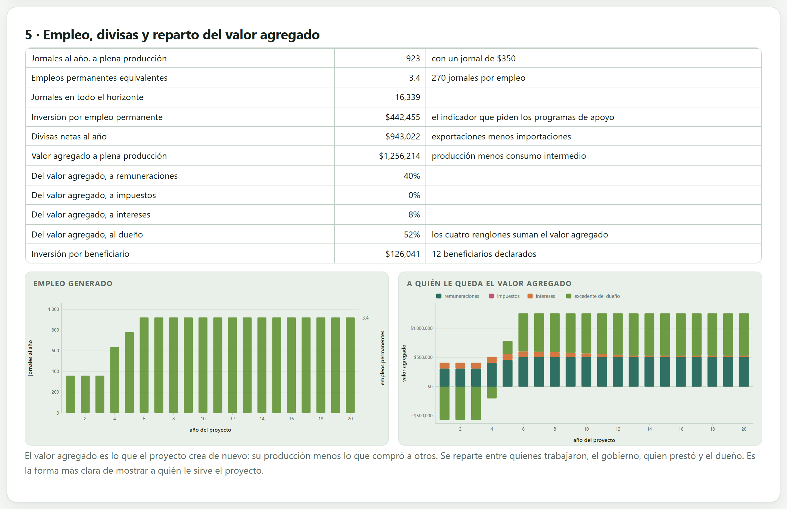

Hasta aquí la pregunta era si al dueño le conviene. Este bloque cambia de dueño: pregunta si al país le conviene. Corrige los precios de mercado con factores de conversión, quita las transferencias, valora la divisa, descuenta a la tasa social y entrega el VAN económico junto con el puente —pieza por pieza y exacto— que lo separa del VAN privado. Después mide lo que el VAN no ve: empleo, divisas, valor agregado y a quién le queda.
Un proyecto puede convenirle a su dueño y no convenirle al país, y al revés. Convienen cosas distintas porque cuentan cosas distintas: el impuesto es un costo para el dueño y no es un costo para el país —cambia de bolsillo dentro del mismo país—, y el jornal de un peón que de otro modo estaría desocupado le cuesta al dueño lo que le paga, pero al país le cuesta mucho menos.
Este bloque toma el flujo del proyecto del Bloque 5 —el flujo sin deuda, no el del inversionista— y lo vuelve a valorar con precios cuenta: cada rubro multiplicado por un factor que dice cuánto de ese peso es un recurso real. Lo que no hace es inventar beneficios que nadie midió: no valora el paisaje, ni la erosión evitada, ni la salud. Si el proyecto tiene efectos externos importantes, se declaran aparte y se dice que el VAN económico no los incluye.
El precio de mercado incluye impuestos, subsidios, aranceles y cualquier distorsión que haya. El precio cuenta o precio sombra es lo que ese recurso vale para la economía: lo que el país deja de tener por usarlo aquí. La metodología que sigue la app es la de Squire y van der Tak (1975) en la forma en que la usan los bancos de desarrollo, que convierte todo a precios de eficiencia con factores por rubro y con un factor estándar para lo no comerciable.
Tres correcciones hacen casi todo el trabajo: quitar las transferencias (impuestos y subsidios, que no crean ni destruyen recursos), poner el trabajo a su costo de oportunidad —que con desempleo estacional es menor que el salario— y darle a la divisa el valor que realmente tiene para el país.

| VAN económico, a la tasa social del 10 % | $2,884,580 |
| TIR económica | 19.40 % |
| VAN privado, a la tasa del 8.41 % | $1,296,243 |
| Relación beneficio–costo económica | 1.43 |
El proyecto conviene por los dos lados, y al país le conviene más del doble que a su dueño, a pesar de que el país lo descuenta a una tasa más alta. La sección 8.4 desarma esa diferencia en cuatro piezas que suman exacto.
La primera tarjeta es el corazón del bloque: nueve casillas, una por rubro. Cada factor dice cuánto vale para el país un peso de ese rubro.

| Factor | Qué significa y en qué rango suele estar |
|---|---|
| Estándar | Para lo no comerciable, lo que no se importa ni se exporta: obra civil, servicios locales, transporte interno. En México suele tomarse entre 0.85 y 0.95; recoge el promedio de impuestos indirectos de la economía. |
| Producto | 1 si el precio de mercado ya refleja lo que vale; mayor que 1 si es exportable y el tipo de cambio está sobrevaluado, porque entonces el mercado le paga menos de lo que aporta. |
| Mano de obra | El costo de oportunidad del jornal. Con desempleo estacional está entre 0.5 y 0.8: el peón que se contrata en la cosecha no deja de producir otra cosa por el valor completo de su salario. |
| Insumos, maquinaria | Cerca de 1 cuando son comerciables y se compran a precio internacional; menores si llevan impuestos que el país recupera. |
| Divisa | Cuánto vale realmente un dólar para el país frente al tipo de cambio oficial. Mayor que 1 cuando la moneda está sobrevaluada; es el factor que hace valer las exportaciones. |
Ninguno de estos números se inventa en el momento: se toman de un estudio nacional, de un manual del banco que financia o de un trabajo publicado, y se citan. Lo que la app trae son valores de arranque razonables para México, no una fuente.
| Rubro | Factor | Por qué |
|---|---|---|
| Estándar | 0.90 | lo no comerciable |
| Producto (café) | 1.05 | es exportable y el mercado lo subvalúa |
| Mano de obra | 0.60 | cosecha estacional en una región con desempleo |
| Insumos | 0.95 | comerciables, con poco impuesto recuperable |
| Maquinaria y energía | 1.00 | a precio internacional |
| Servicios, administración, otros | 0.90 | van al factor estándar |
| Divisa | 1.10 | un dólar vale 10 % más de lo que dice el tipo de cambio |
| Inversión | 0.945 | ponderada por la app según el Bloque 4 |
El factor de la inversión no se escribe: la app lo arma con la composición real del presupuesto —el terreno vale 1, la obra civil va al factor estándar y la maquinaria al de los bienes comerciables— y en el cafetal sale 0.945. Se puede fijar a mano, pero entonces hay que poder defender ese número.
Es también el más discutible. Ponerlo en 0.60 equivale a afirmar que, en esa región y en esa temporada, cada peón contratado deja de producir sesenta centavos por cada peso que se le paga. Eso es una afirmación sobre el mercado de trabajo local, no un dato técnico, y hay que sostenerla: con empleo pleno el factor sería 1 y buena parte de la ventaja social del proyecto desaparecería. Un capítulo de evaluación social que no explica de dónde sale este número está incompleto.
La segunda tarjeta pide seis datos que el VAN no necesita pero que sí necesitan los indicadores de la sección 8.7.

| Dato | Cafetal | Para qué sirve |
|---|---|---|
| Jornal pagado | $350 | divide el costo de mano de obra y da los jornales del año |
| Jornales por empleo permanente | 270 | convierte jornales en empleos equivalentes |
| Del ingreso, se exporta | 70 % | la parte que gana divisas y que el factor de la divisa premia |
| De los costos, es importado | 20 % | la parte que gasta divisas y que el mismo factor encarece |
| Subsidio recibido al año | $0 | es una transferencia: se le devuelve al país en el puente |
| Beneficiarios | 12 | da la inversión por beneficiario que piden los programas |
El porcentaje de exportación de esta tarjeta y los canales del Bloque 3 son cosas distintas y conviven sin estorbarse. En el Bloque 3, la exportación cambia el precio que el productor recibe, con su premio o su castigo. Aquí cambia el valor para el país de ese mismo peso, porque trae divisas. Si el proyecto exporta, los dos efectos existen y los dos se declaran.
La tercera tarjeta es la que hay que copiar a la tesis. En vez de entregar dos números sin relación, desarma la diferencia en piezas que suman exacto: si alguna vez no cerrara, sería un error del programa.

| Concepto | Valor presente | Por qué |
|---|---|---|
| VAN privado, a la tasa privada | $1,296,243 | lo que dice el Bloque 6 |
| VAN privado, a la tasa social | $702,652 | el país descuenta al 10 %, no al 8.41 % |
| + transferencias | $0 | el cafetal no paga ISR ni recibe subsidio |
| ± precio del producto | $1,024,603 | factor 1.05 y el premio de la divisa sobre el 70 % exportado |
| ± precios de los costos | $1,051,137 | sobre todo la mano de obra a 0.60 |
| ± precios de la inversión | $106,188 | obra, equipo y capital de trabajo |
| VAN económico | $2,884,580 | lo que el proyecto le deja al país |
Las cuatro correcciones suman $2,181,928 y, con los $702,652 de partida, dan los $2,884,580 al centavo. Dos de ellas —el precio del producto y el de los costos— explican casi todo, y las dos apuntan a lo mismo: el mercado le paga poco al café y le cobra caro el trabajo.
Pasar de $1,296,243 a $702,652 no es una corrección de precios: es solo cambiar la tasa. El proyecto pierde casi $600,000 de valor presente por descontarse al 10 % en lugar del 8.41 %, y eso ocurre antes de tocar un solo precio. En un proyecto de veinte años con gestación larga, la tasa pesa tanto como los factores; por eso el renglón aparece separado y no escondido dentro de las correcciones.
El dueño resta el impuesto porque sale de su bolsa. El país no lo resta porque no sale del país: pasa de la empresa al gobierno y sigue disponible para gastarse. Lo mismo, al revés, con un subsidio: para el dueño es un ingreso y para el país no es un recurso nuevo, sino uno que se le quitó a otra parte del presupuesto.
En el cafetal la pieza vale cero, y por una razón que vale la pena decir en la tesis: el proyecto está exento del impuesto sobre la renta por el artículo 74 de la LISR, como se vio en el Bloque 5. No hay impuesto que devolver porque no se pagó ninguno.
Debajo del puente, la misma tarjeta dibuja los dos flujos contra toda la escala de tasas, con las dos tasas marcadas.

No es el costo del dinero para el productor: es lo que la sociedad exige por posponer consumo. Suele fijarla el gobierno o el organismo que financia —en México se han usado valores alrededor del 10 % para la evaluación de proyectos públicos— y se cita, no se calcula. Se escribe en el Bloque 2 y este bloque la usa tal cual.
Lo normal es que la tasa social sea menor que la privada, porque el país puede esperar más que un productor y porque diversifica riesgos que un dueño no puede diversificar. Cuando sale al revés, como en el cafetal, la app lo advierte: no es imposible —una tasa privada baja por mucho crédito barato lo explica—, pero hay que justificarlo.
La cuarta tarjeta pone el flujo completo con las dos versiones de cada renglón, de mercado y económica, para que se vea qué hizo cada factor. Se descarga en .csv.
| Año | Ingreso de mercado | Ingreso económico | Costo de mercado | Costo económico | Flujo económico |
|---|---|---|---|---|---|
| 2026 | — | — | — | — | −$1,423,504 |
| 2027 | $0 | $0 | $471,000 | $403,520 | −$403,520 |
| 2032 | $1,586,774 | $1,777,187 | $838,600 | $684,600 | $1,092,587 |
En 2026 la inversión de mercado es de $1,512,493 y la económica de $1,423,504: el factor ponderado de 0.945 le quita al país cerca de $89,000 de costo que en realidad eran impuestos. En 2032, a plena producción, el ingreso sube un 12 % al pasar a precios cuenta y el costo baja un 18 %: el flujo económico del año ($1,092,587) es un 46 % mayor que el privado antes de impuestos ($748,174).
El ingreso económico es el ingreso de mercado por el factor del producto, más el premio de la divisa sobre la parte exportada:
En 2032: $1,586,774 × 1.05 + $1,586,774 × 0.70 × 0.10 = $1,666,113 + $111,074 = $1,777,187, que es exactamente lo que muestra la tabla.
El costo económico es cada grupo de costo por su propio factor —la mano de obra a 0.60, los insumos a 0.95, los servicios a 0.90, los costos fijos anuales al de administración— más el encarecimiento de la parte importada por el mismo factor de la divisa. En 2032, los $838,600 de costo de mercado se convierten en $684,600.
El VAN económico es un número, y hay preguntas que un número no contesta: cuánta gente trabaja, cuántas divisas entran, quién se queda con lo que el proyecto crea. La quinta tarjeta las contesta.

| Jornales al año, a plena producción | 923 | con un jornal de $350 |
| Empleos permanentes equivalentes | 3.4 | 270 jornales por empleo |
| Jornales en todo el horizonte | 16,339 | |
| Inversión por empleo permanente | $442,455 | el indicador que piden los apoyos |
| Divisas netas al año | $943,022 | $4,768,676 en valor presente |
| Valor agregado a plena producción | $1,256,214 | producción menos consumo intermedio |
| Inversión por beneficiario | $126,041 | 12 beneficiarios declarados |
Ocho hectáreas de café sostienen 3.4 empleos permanentes. Dicho así suena poco; dicho como 923 jornales al año en una región donde el trabajo es estacional, suena a lo que es. Los dos números son el mismo y conviene reportar los dos.
El valor agregado es lo que el proyecto crea de nuevo: su producción menos lo que compró a otros. En el cafetal, a plena producción, $1,586,774 de producción menos $330,560 de insumos y servicios dan $1,256,214. Es la misma idea con la que se arma el producto interno bruto, aplicada a un proyecto.
Ese valor se reparte entre cuatro y solo cuatro destinos, y los cuatro suman el total exacto: quienes trabajaron, el gobierno, quien prestó y el dueño.
| A quién le queda | Cafetal | $ al año |
|---|---|---|
| Remuneraciones | 40 % | $508,040 |
| Impuestos | 0 % | $0 |
| Intereses | 8 % | $96,380 |
| Excedente del dueño | 52 % | $651,794 |
Cuatro de cada diez pesos que el cafetal crea se quedan en la región como salario. Esa es la frase que un proyecto de desarrollo rural necesita, y no está en el VAN.
Son las exportaciones menos las importaciones: el 70 % del ingreso que sale al extranjero menos el 20 % de los costos que entra de él. Un proyecto que exporta mucho pero importa todos sus insumos puede aportar muy pocas divisas netas, y reportar solo las exportaciones lo haría ver mejor de lo que es. La app siempre reporta el neto.
La última tarjeta revisa la coherencia de lo que se declaró. En el cafetal sale uno.
«La tasa social (10.00 %) es mayor que la privada (8.41 %); normalmente es al revés, porque el país puede esperar más que un productor.»
No es un error: la tasa privada del cafetal es baja porque el 45 % del proyecto se financia con crédito deducible. Pero la tesis tiene que decirlo, porque de ahí sale la resta de casi $600,000 del puente.
| Clase | Lo que revisa |
|---|---|
| Error | No hay proyecto que evaluar socialmente: falta algo de los bloques anteriores. Y uno que no debería verse nunca: que el puente no cierre, que sería un error del programa y hay que reportarlo. |
| Advertencia | La tasa social es mayor que la privada; el proyecto le conviene al dueño pero no al país, señal de que su rentabilidad viene de transferencias o de precios distorsionados; el factor estándar quedó fuera del rango usual de 0.8 a 1.0. |
| Nota | El proyecto no le conviene al productor pero sí al país —el caso típico del que merece apoyo público—; la mano de obra se está valuando a su salario de mercado; falta el jornal para poder contar empleos; se declararon exportaciones pero el factor de la divisa quedó en 1, con lo que las divisas no aportan nada. |
| Si el proyecto pide recursos públicos o un apoyo | entonces el VAN económico manda, y el privado va como prueba de que el dueño podrá operarlo. |
| Si el proyecto es enteramente privado | entonces este bloque es opcional; si se incluye, sirve para argumentar el apoyo o el permiso, no la rentabilidad. |
| Si usas un factor de mano de obra menor a 1 | entonces justifícalo con el mercado de trabajo de la región, y cita la fuente del factor. |
| Si el VAN económico y el privado se contradicen | entonces el puente dice exactamente por qué, y esa explicación es el resultado del capítulo. |
| Si el proyecto tiene efectos ambientales | entonces decláralos aparte: este bloque no los valora y no debe aparentar que sí. |
| Si reportas empleo | entonces da los jornales y los empleos equivalentes, y di cuántos jornales cuenta un empleo. |
Con este bloque termina la evaluación del proyecto. El Bloque 9 cambia otra vez de pregunta: ya no si este proyecto conviene, sino cuál de varios conviene más, cuándo reemplazar y qué hacer cuando el dinero no alcanza para todos.